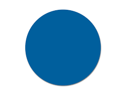
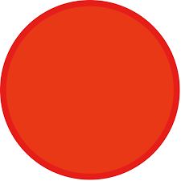

<!DOCTYPE html>
<html>
    <head>
        <title>My experiment</title>
        <script src="../../jspsych-6.1.0/jspsych.js"></script>
         <script src="../../jspsych-6.1.0/plugins/jspsych-html-keyboard-response.js"></script>
         <script src="../../jspsych-6.1.0/plugins/jspsych-two-image-slider-response.js"></script>
         <script src="../../jspsych-6.1.0/plugins/jspsych-image-keyboard-response.js"></script>
        <link href="../../jspsych-6.1.0/css/jspsych.css" rel="stylesheet" type="text/css"></link>
    </head>
    <body></body>
    
     
  <script>

    /* create timeline */
    var timeline = [];

    /* define welcome message trial */
    var welcome = {
      type: "html-keyboard-response",
      stimulus: "Welcome to the experiment. Press any key to begin."
    };
    timeline.push(welcome);

    /* define instructions trial */
    var instructions = {
      type: "html-keyboard-response",
      stimulus: "<p>In this experiment, a circle will appear in the center " +
          "of the screen.</p><p>If the circle is <strong>blue</strong>, " +
          "press the letter F on the keyboard as fast as you can.</p>" +
          "<p>If the circle is <strong>red</strong>, press the letter J " +
          "as fast as you can.</p>" +
          "<div style='width: 700px;'>"+
          "<div style='float: left;'></img>" +
          "<p class='small'><strong>Press the F key</strong></p></div>" +
          "<div class='float: right;'></img>" +
          "<p class='small'><strong>Press the J key</strong></p></div>" +
          "</div>"+
          "<p>Press any key to begin.</p>",
      post_trial_gap: 2000
    };
    timeline.push(instructions);

    /* test trials */
    
    var train_trials = {
      type: "two-image-slider-response",
      stimulus_height: 300,
      stimulus_duration: 1000,   
      resp_stimulus_height: 100,
      labels: ['Very unlikely', 'Very likely'],
      require_movement: true,   
      randomize_order: true,
      repetitions: 3,    
      timeline: [
      {stimulus: 'draw_stimuli/Slide1.png',
      resp_stimulus: 'draw_options/Slide5.png'},
      {stimulus: 'draw_stimuli/Slide2.png',
      resp_stimulus: 'draw_options/Slide1.png'},
      ]
      
    }

    timeline.push(train_trials);

    /* start the experiment */
    jsPsych.init({
      timeline: timeline
    });
  </script>
  </html>